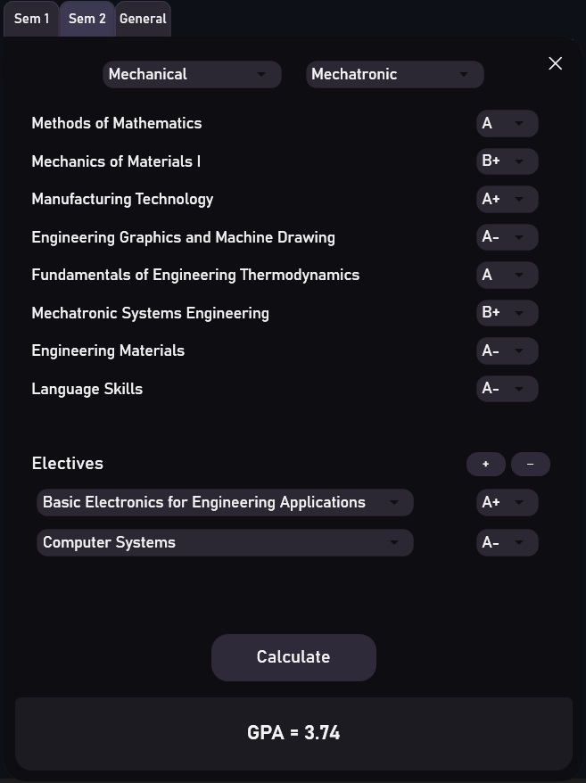
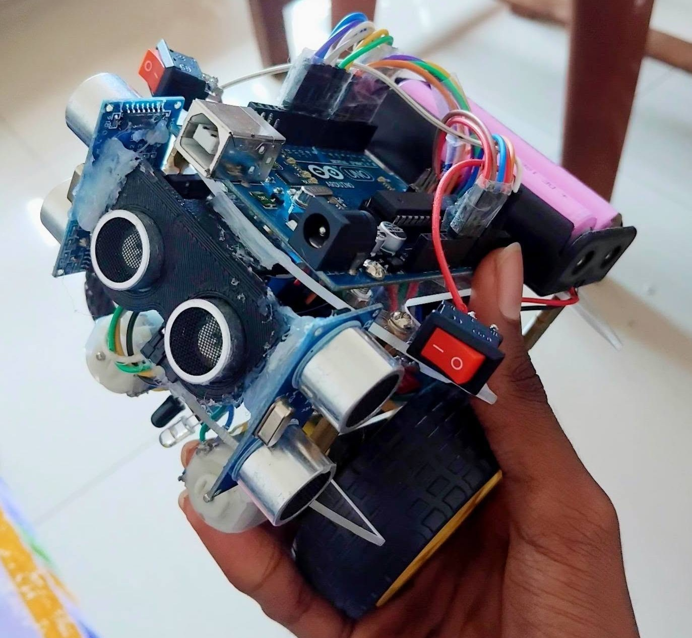

A comprehensive look at all the systems I've designed, simulated, and built.

A simple GPA Calculator built for University of Moratuwa Engineering students. This only requires user to input their grades to calculate their GPA. This can also be used universally by inputting the credit values of each subject. Built using C# in Visual Studio, and deployed as a Windows application.
View Project in Github →
A maze-solving robot designed for the Inter-University Micromouse competition by Electrical Engineering department at UoM. This robot is designed to autonomously navigate through a maze using a combination of ultrasonic sensors and algorithms and specially no use of encoders.
View Project in Github →